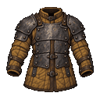
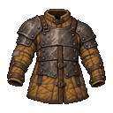
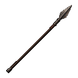
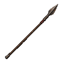

Handworked equipment
Uneven forging, hand-shaped timber, imperfect stitching and ingrained grime. Two representative finish studies; original drawings remain preserved. Material character does not introduce item deterioration or new stats.
Riveted Mining Coat

Previous
Handworked studyGarrison Spear

Previous
Handworked studyThe coat is the stronger end of this roughness pass; its visible dents and patch need not be repeated on every item. The spear keeps a nearly straight usable shaft with irregular grain and forging.
The blade revision was rejected by the image service; its original is retained. No substitute revision is presented.
Art direction and handoff · Exact edit prompts and sources · Full original set